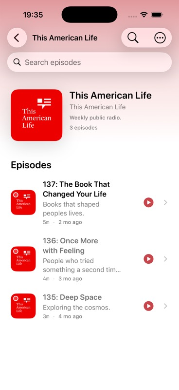

{kind=link}
Accessibility And Dynamic Type
Semantic labels are present for podcast and episode rows, but no VoiceOver/Dynamic Type/contrast audit was performed.
Evidence refs: c1-ui-tree
- Missing formal accessibility audit keeps this dimension incomplete.
Pod0 Validation
Library And Episode Management - pass_with_issues
| Step | Phase | Action | Expected | Status | Evidence Needed |
|---|---|---|---|---|---|
| step-01-preconditions | Preconditions | Prepare one subscribed show | Fixture, device, provider, account, cassette, and network state match the scenario setup. | not_run | source_doc, command_output |
| step-02-action | Primary Action | Execute Library opens | The user-visible route follows the intended path without hidden state mutation. | not_run | screenshot, ui_tree, log |
| step-03-result | Expected Result | Observe that the show appears with artwork, title, author, and episode count | Observed UI, logs, metrics, and state projections agree with the expected behavior. | not_run | accessibility_audit, command_output, log, metric_trace, screenshot, source_doc, ui_tree |
| step-04-exit | Exit State | Leave the flow through the natural product path | Adjacent screens, back stack, mini-player, account, transcript, agent, or library state remain coherent. | not_run | screenshot, ui_tree |
Declared setup dependencies: UITestSeed. Provider mode is none until validation attaches fixtures or cassettes.
| Name | OS | Form Factor | UDID |
|---|---|---|---|
| iPhone 17 | iOS 26.2 | iphone | B4E1F31A-044B-4860-860B-C325BE5CC36E |
No cassettes declared for this scaffold.
No retry was needed for list/show capture. Remaining branches require explicit follow-up evidence.
| Attempt | Status | Executor | Tools | Commands | Notes |
|---|---|---|---|---|---|
| attempt-001 | pass_with_issues | Codex via XcodeBuildMCP | mcp__xcode.snapshot_ui, mcp__xcode.tap, mcp__xcode.screenshot | build_run_sim extraArgs=-skipPackagePluginValidation launchArgs=--UITestSeed | Current evidence covers LIB-001's podcast list row and show-detail navigation. Filter/category and long-press branches are adjacent follow-up. |
LIB-001 is evidence-backed: the seeded subscribed show appears with title, provider/author summary, episode count, artwork, and navigation to show detail. The broader legacy C1 filter/context-menu branches remain out of scope for this catalog row.


Screenshots and UI-tree excerpts contain seeded public podcast data only. No secrets or private keys are exposed.
Required evidence kinds: source_doc, screenshot, ui_tree, log, metric_trace, accessibility_audit
| Kind | Reason | Blocked Dimensions |
|---|---|---|
| accessibility_audit | VoiceOver, Dynamic Type, and contrast were not audited. | accessibility_dynamic_type, touch_ergonomics |
| ID | Type | Path | Description |
|---|---|---|---|
| catalog:lib-001 | source_doc | sources/catalog/01-foundation-identity-discovery-library.md | Catalog source row for LIB-001 at line 70. |
| rubric:review-skill-grounding | source_doc | data/skill-grounding.json | Required review skills and skill-search terms for scenario critique. |
| c1-screenshot-all-podcasts | screenshot | assets/scenarios/c1-view-library/20260705T193400Z-all-podcasts.jpg | All Podcasts screen showing seeded This American Life subscription row. |
| c1-screenshot-show-detail | screenshot | assets/scenarios/c1-view-library/20260705T193500Z-show-detail.jpg | Show detail screen for This American Life after opening the podcast row. |
| c1-ui-tree | ui_tree | assets/scenarios/c1-view-library/20260705T193500Z-ui-tree-excerpt.json | XcodeBuildMCP semantic UI-tree excerpts for All Podcasts and show detail. |
| pod0-local-run-log | log | assets/scenarios/shared/20260705T193205Z-run-log-references.json | Shared build, runtime, simulator, and command log references for the local evidence run. |
| Area | Status | Summary | Checks | Gaps |
|---|---|---|---|---|
| accessibility | incomplete | Rows expose useful labels, but no VoiceOver/Dynamic Type/contrast pass was run. | semantic labels, target size, Dynamic Type | Formal accessibility audit missing. |
| content_localization | incomplete | Podcast metadata, transcript/agent copy, truncation, empty copy, locale/date/number behavior, and translation safety. Current scaffold has no run evidence for LIB-001. | copy clarity, long text, dates/numbers/locale, empty/error copy, transcript readability | Attach content localization evidence before scoring this area above 2. |
| controls_gestures | incomplete | Buttons, menus, sheets, gestures, audio route controls, haptics, keyboard alternatives, and touch reach. Current scaffold has no run evidence for LIB-001. | touch reach, gesture alternative, audio controls, haptic expectation, sheet/menu behavior | Attach controls gestures evidence before scoring this area above 2. |
| observability | incomplete | Structured logs, metric IDs, provider/request IDs, relay IDs, redacted traces, and issue reproduction context. Current scaffold has no run evidence for LIB-001. | metric IDs, request IDs, relay IDs, redacted traces, issue reproduction context | Attach observability evidence before scoring this area above 2. |
| offline_resume | incomplete | Offline state, app relaunch, background playback, interrupted provider calls, downloads, and resume from stale state. Current scaffold has no run evidence for LIB-001. | offline messaging, resume after relaunch, background playback, download availability, cancel/retry | Attach offline resume evidence before scoring this area above 2. |
| performance | pass_with_issues | Semantic snapshot counts are captured for the two screens; no visible load delay was observed. | snapshot node count, screen responsiveness | No Instruments trace. |
| privacy_security | incomplete | Secrets, private keys, permissions, logs, analytics, relay visibility, cassette redaction, and export safety. Current scaffold has no run evidence for LIB-001. | no secrets in screenshots/logs, permission clarity, redaction hashes, private Nostr material safe | Attach privacy security evidence before scoring this area above 2. |
| reliability | incomplete | Rerun count, flake history, retry behavior, stale evidence, timeout behavior, and deterministic replay. Current scaffold has no run evidence for LIB-001. | rerun count, retry cause, flake history, fresh build, deterministic replay | Attach reliability evidence before scoring this area above 2. |
| ui | incomplete | Readable native list/detail UI; missing filter and unplayed-count evidence prevents a pass. | visual hierarchy, row state, platform-native controls | Capture filter/category and unplayed-count behavior. |
| ux | incomplete | Navigation to show detail is clear; remaining list-management tasks are not validated. | task clarity, discoverability, predictable navigation | Capture context menu and filter escape path. |
| Metric | Value | Budget | Status | Method |
|---|---|---|---|---|
| All Podcasts UI-tree node count | 69 nodes | Informational local metric | pass | XcodeBuildMCP snapshot_ui |
| Show detail UI-tree node count | 128 nodes | Informational local metric | pass | XcodeBuildMCP snapshot_ui |
Local UI snapshots captured 69 nodes on All Podcasts and 128 nodes on show detail without visible loading delay.
Not assessed. Record transition, haptic, and Reduce Motion behavior when motion is part of the flow.
Not assessed. Review must check buttons, menus, sheets, gestures, audio route controls, haptics, keyboard alternatives, and one-handed reach.
| Dimension | Score | Status | Rationale |
|---|---|---|---|
| engineering_quality | 2 | incomplete | Node-count evidence exists; accessibility/performance audits are not complete. |
| evidence_reproducibility | 3 | pass_with_issues | Screenshots, UI trees, and log references make the captured path reproducible. |
| follow_through | 2 | incomplete | No app defect was filed; remaining gaps need scenario follow-up. |
| functional_correctness | 3 | pass_with_issues | Core LIB-001 list/show path works; adjacent filter/context-menu branches remain untested. |
| product_experience | 2 | incomplete | List/detail UI is coherent, but expected filters/unplayed count are unresolved. |
Ship gate: incomplete
| Gate | Status | Requirement | Owner |
|---|---|---|---|
| required_evidence | pass_with_issues | Screenshots/UI trees/logs/cassettes/metrics required by the scenario are attached and redacted. | validation-agent |
| skill_grounding | pass | UI, UX, accessibility, performance, and product judgments cite the loaded review skills or local doctrine. | validation-agent |
| score_integrity | pass_with_issues | Every dimension and group score follows the evidence gates and matches the final verdict. | validation-agent |
| product_coherence | incomplete | Individual scenario judgment and related-scenario group judgment are both present. | validation-agent |
| defect_tracking | incomplete | Every actionable defect has severity, owner, GitHub issue link, and fix/revalidation state. | validation-agent |
| release_readiness | incomplete | No blocker or major unresolved risk remains without an explicit owner and acceptance rationale. | validation-agent |
| Gap | Severity | Summary | Affected Dimensions | Owner |
|---|---|---|---|---|
| c1-accessibility-audit-missing | major | No VoiceOver, Dynamic Type, contrast, Reduce Motion, or target-size audit was run. | accessibility_dynamic_type, touch_ergonomics | validation-agent |
| Gap | Severity | Summary | Affected Dimensions | Owner |
|---|---|---|---|---|
| c1-accessibility-audit-missing | major | No VoiceOver, Dynamic Type, contrast, Reduce Motion, or target-size audit was run. | accessibility_dynamic_type, touch_ergonomics | validation-agent |
| ID | Severity | Priority | Risk | Dimensions | Mitigation |
|---|---|---|---|---|---|
| risk-lib001-adjacent-coverage | minor | p2 | LIB-001 evidence should not be overread as covering adjacent filter or unsubscribe scenarios. | regression_risk, product_cluster_coherence | Keep adjacent LIB rows separate and collect their own evidence. |
No defects are linked yet because this scaffold has not been executed.
| Dimension | Score | Status | Rationale |
|---|---|---|---|
| engineering_quality | 2 | incomplete | Node-count evidence exists; accessibility/performance audits are not complete. |
| evidence_reproducibility | 3 | pass_with_issues | Screenshots, UI trees, and log references make the captured path reproducible. |
| follow_through | 2 | incomplete | No app defect was filed; remaining gaps need scenario follow-up. |
| functional_correctness | 3 | pass_with_issues | Core LIB-001 list/show path works; adjacent filter/context-menu branches remain untested. |
| product_experience | 2 | incomplete | List/detail UI is coherent, but expected filters/unplayed count are unresolved. |
| Dimension | Score | Status | Rationale |
|---|---|---|---|
| accessibility_dynamic_type | 0 | incomplete | Accessibility And Dynamic Type has not been validated with current run evidence. |
| actual_result | 3 | pass_with_issues | The observed list/show path satisfies LIB-001; adjacent filter and context-menu behavior remain separate follow-up. |
| analytics_privacy_boundaries | 0 | incomplete | Analytics And Privacy Boundaries has not been validated with current run evidence. |
| artifacts | 3 | pass_with_issues | Screenshots, UI tree, and log references are attached; no video or full accessibility audit is attached. |
| attempted_test | 3 | pass_with_issues | A current simulator run was performed, but not every branch was exercised. |
| content_hierarchy | 0 | incomplete | Content Hierarchy has not been validated with current run evidence. |
| controls_gestures_audio | 0 | incomplete | Controls, Gestures, Audio, And Haptics has not been validated with current run evidence. |
| cross_screen_continuity | 0 | incomplete | Cross-Screen Continuity has not been validated with current run evidence. |
| defects_issues_filed | 0 | incomplete | Defects And Issues Filed has not been validated with current run evidence. |
| device_os_matrix | 0 | incomplete | Device And OS Matrix has not been validated with current run evidence. |
| error_recovery | 0 | incomplete | Error And Recovery Behavior has not been validated with current run evidence. |
| evidence_confidence | 3 | pass_with_issues | Current, dated simulator evidence exists for part of the scenario. |
| execution_attempts | 0 | incomplete | Execution Attempts, Retries, And Branches has not been validated with current run evidence. |
| expected_behavior | 0 | incomplete | Expected Behavior has not been validated with current run evidence. |
| flow | 0 | incomplete | Flow has not been validated with current run evidence. |
| information_architecture | 0 | incomplete | Information Architecture has not been validated with current run evidence. |
| instrumentation_gaps | 0 | incomplete | Instrumentation Gaps And Missing Evidence has not been validated with current run evidence. |
| liquid_glass_ios_primitives | 0 | incomplete | Liquid Glass And iOS Primitives has not been validated with current run evidence. |
| localization_content_quality | 0 | incomplete | Localization And Content Quality has not been validated with current run evidence. |
| motion_haptics | 0 | incomplete | Motion And Haptics has not been validated with current run evidence. |
| next_actions | 0 | incomplete | Next Actions has not been validated with current run evidence. |
| nmp_architecture | 0 | incomplete | NMP Architecture And Cohesiveness has not been validated with current run evidence. |
| observability | 0 | incomplete | Observability has not been validated with current run evidence. |
| offline_resume_behavior | 0 | incomplete | Offline, Interruption, And Resume Behavior has not been validated with current run evidence. |
| performance | 3 | pass_with_issues | Snapshot node counts were collected and no visible wait was observed; no Instruments trace is attached. |
| persona_acceptance | 0 | incomplete | Persona, Job, And Acceptance Criteria has not been validated with current run evidence. |
| privacy_security | 0 | incomplete | Privacy And Security has not been validated with current run evidence. |
| product_cluster_coherence | 0 | incomplete | Product Cluster Coherence has not been validated with current run evidence. |
| product_coherence | 0 | incomplete | Product Coherence In Context has not been validated with current run evidence. |
| readiness_gates | 0 | incomplete | Readiness Gates has not been validated with current run evidence. |
| regression_risk | 0 | incomplete | Regression Risk has not been validated with current run evidence. |
| reliability_flakiness | 0 | incomplete | Reliability And Flakiness has not been validated with current run evidence. |
| replayability_cassette_provenance | 0 | incomplete | Replayability And Cassette Provenance has not been validated with current run evidence. |
| review_skill_grounding | 0 | incomplete | Review Skill Grounding has not been validated with current run evidence. |
| risks_follow_up | 0 | incomplete | Risks, Follow-Up, And Back-Links has not been validated with current run evidence. |
| scenario_setup | 0 | incomplete | Scenario Setup has not been validated with current run evidence. |
| sister_app_nmp_chirp_comparison | 0 | incomplete | Sister App, NMP, And Chirp Comparison has not been validated with current run evidence. |
| states_resilience | 0 | incomplete | Empty, Loading, Offline, And Recovery States has not been validated with current run evidence. |
| touch_ergonomics | 0 | incomplete | Touch Ergonomics has not been validated with current run evidence. |
| ui_polish | 3 | pass_with_issues | Readable list/detail UI for LIB-001; filter/unplayed-count variants are adjacent follow-up. |
| ux_polish | 3 | pass_with_issues | Show discovery and navigation work for LIB-001; additional list-management tasks are not part of this row. |
| verdict | 3 | pass_with_issues | LIB-001 is validated with caveats for adjacent untested branches. |
Semantic labels are present for podcast and episode rows, but no VoiceOver/Dynamic Type/contrast audit was performed.
Evidence refs: c1-ui-tree
All Podcasts listed This American Life with Following state and 3 episodes. Show detail opened and showed three episode rows. Adjacent filter and context-menu behavior is not part of LIB-001 and remains tracked as follow-up.
Evidence refs: c1-screenshot-all-podcasts, c1-screenshot-show-detail, c1-ui-tree
Not assessed. Confirm useful event boundaries without PII, private keys, raw transcripts/audio, or provider secrets.
Evidence refs: catalog:lib-001
Attached two current screenshots, a semantic UI-tree excerpt, and shared log references.
Evidence refs: c1-screenshot-all-podcasts, c1-screenshot-show-detail, c1-ui-tree, pod0-local-run-log
Executed LIB-001 locally with XcodeBuildMCP on iPhone 17 using --UITestSeed. Captured All Podcasts and This American Life show detail.
Evidence refs: c1-screenshot-all-podcasts, c1-screenshot-show-detail, c1-ui-tree, pod0-local-run-log
Not assessed. Verify podcast/show/episode/transcript/agent content outranks chrome and does not truncate critical meaning.
Evidence refs: rubric:review-skill-grounding
Not assessed. Review must check buttons, menus, sheets, gestures, audio route controls, haptics, keyboard alternatives, and one-handed reach.
Evidence refs: rubric:review-skill-grounding
Not assessed. Capture before/after navigation state for adjacent surfaces and ensure mini-player, queue, transcript, agent, and settings remain coherent.
Evidence refs: catalog:lib-001
No defects have been observed yet because the scenario has not run. Any actionable defect found later must link a GitHub issue before the page can leave incomplete.
Evidence refs: catalog:lib-001
No device/OS matrix has run. The first validation should record simulator/device, OS, locale, appearance, Dynamic Type, and network state.
Evidence refs: catalog:lib-001
Not assessed. Error, offline, retry, cancellation, and recovery paths must be captured where the scenario can fail.
Evidence refs: catalog:lib-001
Evidence confidence is zero until a current build, device/OS, rerun count, freshness, and flake notes are attached.
Evidence refs: catalog:lib-001
No attempts, retries, or branch executions have run. The page reserves structured attempt records for manual, simulator, CI, and replay executions.
Evidence refs: catalog:lib-001
Expected behavior from BDD: the show appears with artwork, title, author, and episode count. NMP/RMP boundary declared by the catalog: D5.
Evidence refs: catalog:lib-001
Catalog flow for Library And Episode Management: Given one subscribed show, when Library opens, then the show appears with artwork, title, author, and episode count.
Evidence refs: catalog:lib-001
Not assessed. Confirm the user knows location, current mode, and next action from titles, tabs, bars, breadcrumbs, and hierarchy.
Evidence refs: rubric:review-skill-grounding
Screenshots, UI trees, logs, metrics, cassettes, and accessibility audits are listed as explicit missing evidence so gaps cannot be hidden in prose.
Evidence refs: catalog:lib-001, rubric:review-skill-grounding
Not assessed. Requires evidence that iOS primitives and glass-like materials are used as functional chrome, with accessibility fallbacks.
Evidence refs: rubric:review-skill-grounding
Not assessed. Review must check locale-sensitive strings, podcast metadata, transcript/agent content, truncation, empty/error copy, and translation safety.
Evidence refs: rubric:review-skill-grounding
Not assessed. Record transition, haptic, and Reduce Motion behavior when motion is part of the flow.
Evidence refs: rubric:review-skill-grounding
Run the scenario, attach evidence, score every dimension, file defects, and republish this page from validated JSON.
Evidence refs: catalog:lib-001
Not assessed. Declared NMP/RMP boundary: D5. Review must check Rust-owned state/policy, thin native renderers, bounded FFI, replay clocks, and privacy fail-closed behavior.
Evidence refs: catalog:lib-001, rubric:review-skill-grounding
Not assessed. Attach structured logs, metric IDs, provider/request IDs, relay IDs, and redacted traces needed to diagnose failures.
Evidence refs: catalog:lib-001
Not assessed. Offline, interruption, relaunch, background playback, cancellation, retry, and resume behavior must be captured where applicable.
Evidence refs: catalog:lib-001
Local UI snapshots captured 69 nodes on All Podcasts and 128 nodes on show detail without visible loading delay.
Evidence refs: c1-ui-tree
Persona: A new or returning podcast listener completing a core Pod0 job on iPhone. Acceptance criteria are the scenario Given/When/Then plus the declared architecture boundary D5.
Evidence refs: catalog:lib-001
Not assessed. Validation must scan screenshots, logs, cassettes, relays, and exports for leaked keys, tokens, private audio, or private Nostr material.
Evidence refs: catalog:lib-001
Library And Episode Management cluster coherence remains incomplete until adjacent scenarios are judged together; LIB-001 now contributes current evidence and linked defects to that group view.
Evidence refs: c1-screenshot-all-podcasts, c1-screenshot-show-detail, c1-ui-tree, pod0-local-run-log, rubric:review-skill-grounding
LIB-001 has current run evidence for the exercised product path, with remaining gaps tracked in missing evidence and follow-up.
Evidence refs: c1-screenshot-all-podcasts, c1-screenshot-show-detail, c1-ui-tree, pod0-local-run-log, rubric:review-skill-grounding
Ship gate is incomplete; gates now reflect attached evidence, remaining missing evidence, linked defects, and cluster-level follow-up.
Evidence refs: c1-screenshot-all-podcasts, c1-screenshot-show-detail, c1-ui-tree, pod0-local-run-log, rubric:review-skill-grounding
Not assessed. Validation must list adjacent scenarios and modules to rerun after any fix.
Evidence refs: catalog:lib-001
Not assessed. Validation must record rerun count, retry causes, flake history, stale-build risk, timeout behavior, and deterministic replay coverage.
Evidence refs: catalog:lib-001
Not assessed. Declared dependencies: UITestSeed. Provider, relay, STT, TTS, LLM, and network behavior must use replay cassettes or explain live-only evidence.
Evidence refs: catalog:lib-001
Review must be grounded in loaded skills, not generic taste. Selected grounding covers Liquid Glass/iOS primitives plus mobile interface, safe-area, Dynamic Type, touch, navigation, accessibility, and performance-as-UX criteria.
Evidence refs: rubric:review-skill-grounding
Current risks are scaffolded from missing evidence and cluster regression exposure. Actionable defects must gain issue/PR links and revalidation run IDs.
Evidence refs: catalog:lib-001
Declared setup dependencies: UITestSeed. Provider mode is none until validation attaches fixtures or cassettes.
Evidence refs: catalog:lib-001
Not assessed. Review must compare applicable NMP doctrine and known Chirp/sister-app fixes before marking this flow cohesive.
Evidence refs: rubric:review-skill-grounding
Not assessed. Capture empty, loading, denied, unavailable, offline, retry, and recovery states reached by this scenario.
Evidence refs: catalog:lib-001
Not assessed. Audit primary controls for reachability, 44x44 pt targets, spacing, and gesture alternatives.
Evidence refs: rubric:review-skill-grounding
The list/show-detail hierarchy is readable and native, but the list lacks visible unplayed-count and filter/category affordances expected by the scenario.
Evidence refs: c1-screenshot-all-podcasts, c1-screenshot-show-detail
Subscription discovery and show navigation are understandable; category/filter and long-press unsubscribe paths are not discoverable from captured evidence.
Evidence refs: c1-screenshot-all-podcasts, c1-ui-tree
Evidence-backed pass with issues for LIB-001. The subscribed show row and detail path are captured; adjacent list-management branches remain open.
Evidence refs: c1-screenshot-all-podcasts, c1-screenshot-show-detail, c1-ui-tree